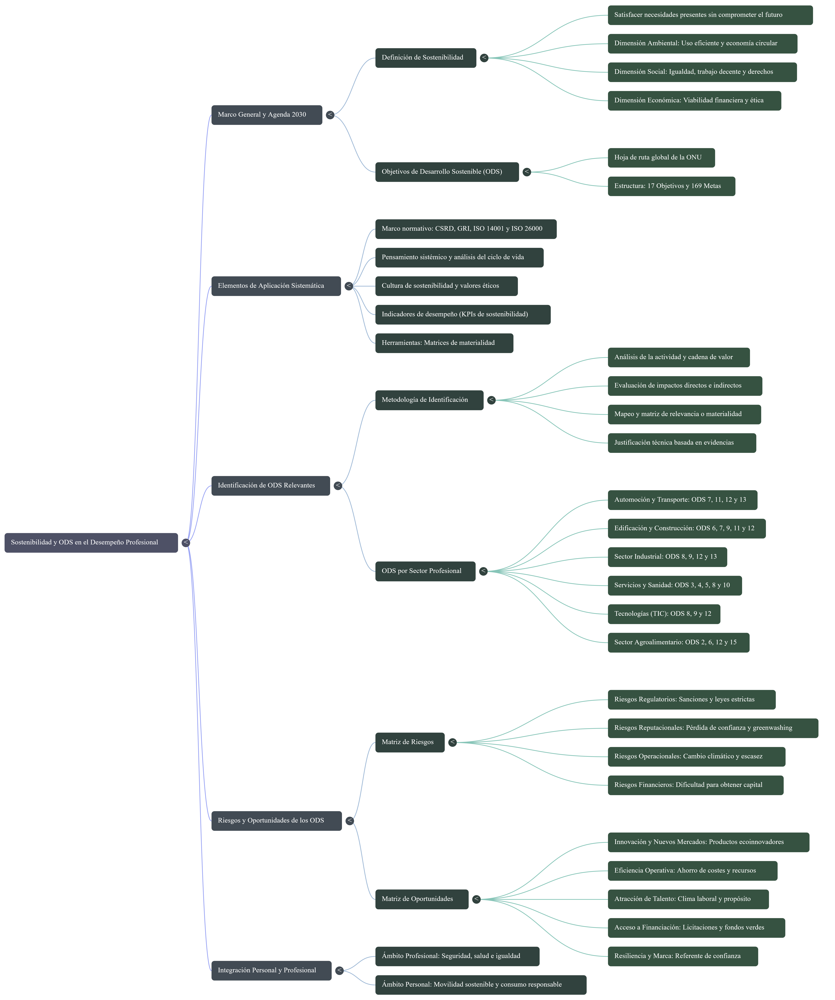

Criterios de sostenibilidad en las TIC
Resultados de aprendizaje y criterios de evaluacion que se evaluarán en esta unidad.
| Resultados de aprendizaje de la unidad didáctica: |
|---|
| RA. 3: Establece la aplicación de criterios de sostenibilidad en el desempeño profesional y personal, identificando los elementos necesarios. |
| Criterios de evaluación de la unidad didáctica: |
|---|
| a) Se han identificado los ODS más relevantes para la actividad profesional que realiza. |
| b) Se han analizado los riesgos y oportunidades que representan los ODS. |
1 - Marco teórico: La sostenibilidad en las tres dimensiones
La sostenibilidad se define formalmente como la facultad de satisfacer las necesidades socioeconómicas del presente sin comprometer la capacidad de las generaciones futuras para cubrir las suyas. En el contexto del desempeño profesional y personal, este principio abandona la mera visión teórica para convertirse en un marco operativo articulado a través de la Agenda 2030 de las Naciones Unidas y los 17 Objetivos de Desarrollo Sostenible (ODS).
Para comprender su aplicación práctica, es imprescindible integrar las tres dimensiones interdependientes de la sostenibilidad:
- Dimensión Ambiental: Enfocada en la protección de los ecosistemas, la descarbonización, la eficiencia energética, la gestión responsable de recursos hídricos y la transición hacia un modelo de economía circular minimizando la generación de residuos.
- Dimensión Social: Orientada a la equidad, la erradicación de las desigualdades, el respeto a los derechos humanos y laborales, la salud y seguridad ocupacional, la diversidad, la inclusión y el bienestar de la comunidad.
- Dimensión Económica: Centrada en la viabilidad financiera a largo plazo, la prosperidad compartida, la ecoinnovación en los modelos de negocio y la transparencia operativa.
2 - Elementos clave para la integración de criterios de sostenibilidad
La aplicación efectiva de la sostenibilidad en la actividad diaria exige una serie de elementos habilitadores que el alumnado debe conocer e identificar:
- Marco regulatorio y estándares de referencia: Conocimiento de la legislación ambiental y social vigente, las directivas de reporte de sostenibilidad (como la Directiva Europea CSRD) y los estándares internacionales de gestión (normas ISO 14001 de gestión ambiental, ISO 26000 de responsabilidad social y marcos GRI).
- Pensamiento sistémico y ciclo de vida: Capacidad de analizar los productos, procesos o servicios de manera holística, evaluando los impactos desde la extracción de materias primas hasta el tratamiento final del residuo (enfoque "de la cuna a la cuna").
- Cultura de sostenibilidad y ética profesional: Adopción de valores de responsabilidad social corporativa (RSC), gobernanza transparente y prevención de malas prácticas como el greenwashing (lavado verde).
- Sistema de indicadores de desempeño (KPIs sostenibles): Herramientas de medición que permiten cuantificar el impacto, tales como la huella de carbono, el consumo hídrico, la tasa de valorización de residuos, la brecha salarial de género o el índice de siniestralidad laboral.
- Herramientas de evaluación y diagnóstico: Empleo de matrices de materialidad, evaluaciones de riesgos y planes de acción específicos.
3 - El Fundamento de la sostenibilidad empresarial
- Para ser social y económicamente sostenibles, las organizaciones deben integrar criterios ambientales, sociales y de gobernanza en todas sus actividades.
- Existe una correlación directa entre la sostenibilidad y la rentabilidad económica, donde las empresas que impulsan estos planes obtienen mejores resultados que sus competidores a medio y largo plazo, proyectando una imagen positiva hacia los consumidores y la sociedad.
3.1 La cultura de sostenibilidad para la empresa
-
Una cultura de sostenibilidad es un plan estratégico que, con el apoyo de instituciones públicas y colectivos empresariales, implementa políticas y medidas concretas alineadas con la Agenda 2030.
-
Aunque la puesta en marcha de estas políticas implica costes asociados iniciales, la planificación adecuada conduce a una disminución de dichos costes con el tiempo, mientras que los beneficios económicos y sociales aumentan considerablemente.
-
Este enfoque genera sinergias positivas que impulsan la actividad empresarial.
-
Para su implementación, se recomienda un trabajo constante en todos los departamentos y la creación de un comité de sostenibilidad que supervise las siguientes tareas:
- Análisis y propuestas: Identificar los aspectos empresariales a mejorar y proponer soluciones.
- Ejecución de acciones: Implementar las mejoras propuestas.
- Auditorías periódicas: Analizar, detectar y proponer variaciones en las mejoras de forma continua.
-
Ejemplos como Henkel, una empresa líder en sostenibilidad con su lema "Crecimiento con propósito", demuestran la viabilidad de este modelo.
3.2 Ventajas estratégicas de la sostenibilidad
- El desarrollo de un plan de cultura de sostenibilidad ofrece múltiples ventajas para las empresas, priorizando los factores ambientales, sociales y de gobernanza sobre el mero
aspecto económico a corto plazo.
- Aumento de clientes: Atrae a consumidores potenciales concienciados con los productos y servicios de empresas sostenibles.
- Reducción de costes: La implementación de políticas ecológicas, como el uso de energías renovables, disminuye los costes empresariales.
- Mejora de la imagen de marca: Aumenta el valor y el prestigio de la empresa, no solo para clientes sino para toda la sociedad.
3.3 Pilares de la Implementación
- La creación de una cultura de sostenibilidad sólida se apoya en tres acciones fundamentales:
- Creación de un ambiente favorable: El empresario debe promover un entorno de trabajo saludable y un sentimiento de pertenencia al grupo.
- Capacitación de los empleados: La empresa debe proporcionar la información necesaria para que los empleados realicen sus tareas de forma sostenible.
- Campañas de concienciación: Los trabajadores deben conocer las acciones que pueden realizar para contribuir al aumento de la sostenibilidad empresarial.
4 - Oportunidades y beneficios de la adopción de los ODS
- Los ODS, acordados por gobiernos a nivel mundial, requieren la colaboración activa de empresas y profesionales para su éxito. Al adoptar las metas de los ODS, las organizaciones obtienen beneficios significativos a medio y largo plazo:
- Identificar oportunidades de negocio: Los ODS canalizan inversiones públicas y privadas hacia metas específicas, abriendo mercados emergentes.
- Aumentar la sostenibilidad empresarial: Refuerzan los incentivos económicos para que las organizaciones modifiquen sus procesos y procedimientos.
- Fortalecer las relaciones con el entorno: Las empresas y profesionales alineados con los ODS mejoran su relación con clientes, empleados y la comunidad.
- Estabilizar mercados y sociedades: Invertir en ODS es apostar por sistemas financieros transparentes e instituciones sin corrupción.
- Buscar un propósito común: Los ODS proporcionan un marco común para abordar los retos sociales más urgentes a nivel global y local.
5 - Análisis de los 17 objetivos de desarrollo sostenible dentro del marco empresarial
ODS 1: Fin de la Pobreza
Descripción y Metas
- Su objetivo es erradicar todas las formas de pobreza para 2030, un desafío que afecta a unos 800 millones de personas.
- Se relaciona directamente con los ingresos, la protección social y el acceso a recursos.
Estrategias de Actuación
- Las empresas pueden adaptar sus modelos de negocio para cooperar con entornos locales.
- Los profesionales pueden participar en proyectos de acción social y voluntariado.
- Un ejemplo es la colaboración entre Administraciones y empresas para evitar cortes de suministro energético a familias vulnerables.
ODS 2: Hambre Cero
Descripción y Metas
- Busca acabar con el hambre y la malnutrición en todas sus formas para 2030, promoviendo una agricultura sostenible y productiva.
- Actualmente, 795 millones de personas sufren desnutrición crónica. En 2022, 45 millones de niños menores de cinco años padecían desnutrición aguda.
Estrategias de Actuación
- Mejorar la trazabilidad en la cadena de valor para asegurar un aprovisionamiento sostenible. Ofrecer microcréditos para inversiones en agricultura sostenible. Las empresas pueden donar excedentes alimentarios, como lo hace Iberdrola, que desde 2012 ha reunido más de 20,400 kilos de alimentos.
ODS 3: Salud y Bienestar
Descripción y Metas
- Persigue garantizar una vida saludable y promover el bienestar para todas las edades. Está íntimamente ligado a los ODS 1 y 2, ya que la pobreza y la desnutrición son causas directas de problemas de salud.
Estrategias de Actuación
- Las empresas pueden innovar en prácticas de sostenibilidad para garantizar vidas sanas y seguras. Deben propiciar entornos laborales seguros y apostar por la investigación.
- El grupo Quirónsalud, por ejemplo, promueve hábitos de alimentación saludable en sus centros.
ODS 4: Educación de Calidad
Descripción y Metas
- Se centra en garantizar una educación inclusiva, equitativa y de calidad. Considerado por la ONU como el hilo conductor para la consecución del resto de ODS, es clave para la movilidad socioeconómica y para salir de la pobreza.
Estrategias de Actuación
- La educación es un eje vertebrador del aumento de la productividad.
- Las empresas pueden apostar por la digitalización y la formación de calidad, y los profesionales deben comprometerse con la formación continua para ser más eficientes.
ODS 5: Igualdad de Género
Descripción y Metas
- Busca lograr la igualdad entre los géneros y empoderar a todas las mujeres y niñas.
- Las metas persiguen eliminar toda forma de discriminación y violencia, y valorar el trabajo doméstico no remunerado.
Estrategias de Actuación
- Implementar políticas de paternidad igualitarias y programas de conciliación.
- Reducir la brecha salarial para aumentar la motivación y las posibilidades de ascenso de las mujeres.
- Organismos como el Instituto de las Mujeres en España desarrollan observatorios para vigilar la igualdad.
ODS 6: Agua Limpia y Saneamiento
Descripción y Metas
- Su objetivo es garantizar la disponibilidad y gestión sostenible del agua y el saneamiento para todos.
- Más del 40% de la población mundial sufre escasez de agua, y en 2022, 2,200 millones de personas carecían de servicios de agua potable segura.
Estrategias de Actuación
- Todas las empresas pueden calcular su huella de agua para reducir su consumo.
- Se deben reducir los vertidos de contaminantes e instalar sistemas de riego inteligentes.
- La empresa Aquara se dedica a la gestión del ciclo integral del agua, reforzando la economía circular.
ODS 7: Energía Asequible y no Contaminante
Descripción y Metas
- Se enfoca en garantizar el acceso a una energía asequible, segura, sostenible y moderna para todos, promoviendo el cambio hacia fuentes más limpias y renovables.
Estrategias de Actuación
- Las empresas deben realizar un análisis profundo de sus procesos productivos para impulsar políticas relacionadas con energías emergentes.
- Pueden medir su huella de carbono y buscar alternativas más limpias, especialmente en el sector del transporte. Naturgy contribuye a este ODS con su compromiso con la innovación sostenible.
ODS 8: Trabajo Decente y Crecimiento Económico
Descripción y Metas
- Promueve el crecimiento económico sostenido, inclusivo y sostenible, el empleo pleno y productivo, y el trabajo decente para todos.
- Busca dar acceso a trabajos dignos a personas de colectivos vulnerables.
Estrategias de Actuación
- Se vincula con el ODS 4, ya que es necesario formar a los trabajadores para adaptarse a entornos laborales cambiantes y con alta capacidad de resiliencia.
- Las empresas pueden usar herramientas como la gamificación para fomentar la interacción y objetivos compartidos.
ODS 9: Industria, Innovación e Infraestructura
Descripción y Metas
- Pretende construir infraestructuras resilientes, promover la industrialización inclusiva y sostenible y fomentar la innovación.
- A pesar de los avances, más de 4,000 millones de personas aún no tienen acceso a internet.
Estrategias de Actuación
- Las empresas deben poner en marcha procesos de innovación e investigación, independientemente de su tamaño.
- La digitalización y la movilidad son vertientes clave.
- La empresa EDP, por ejemplo, planea invertir 2000 millones de euros en proyectos de innovación y digitalización hasta 2025.
ODS 10: Reducción de las Desigualdades
Descripción y Metas
- Su foco es reducir la desigualdad en y entre los países.
- Se estima que el 10% más rico de la población mundial obtiene el 40% de la renta total, mientras que el 10% más pobre solo genera el 5%.
Estrategias de Actuación
- Las empresas pueden invertir en mercados de países emergentes, ofrecer igualdad de oportunidades laborales y salariales, y promover la igualdad a través del acceso a la tecnología.
ODS 11: Ciudades y Comunidades Sostenibles
Descripción y Metas
- Busca que las ciudades y los asentamientos humanos sean inclusivos, seguros, resilientes y sostenibles.
- Se proyecta que más de dos tercios de la población mundial vivirá en áreas urbanas para 2050.
Estrategias de Actuación
- Aunque los sectores públicos lideran las actuaciones, las empresas pueden aportar soluciones. Deben procurar que sus edificios sean sostenibles y pueden desarrollar planes de movilidad para sus empleados.
- Bankinter financia proyectos de hidrógeno y ofrece una "Hipoteca Casa Eficiente".
ODS 12: Producción y Consumo Responsables
Descripción y Metas
- Su fin es garantizar modalidades de consumo y producción sostenibles.
- Implica reducir a la mitad el desperdicio de alimentos para 2030 y cambiar la forma en que gestionamos los recursos y los residuos.
- El uso de la economía circular es clave.
Estrategias de Actuación
- Realizar una planificación y gestión eficiente de residuos.
- Introducir el concepto de economía circular para preservar los recursos.
- Un ejemplo de acción es sustituir las bombillas por otras de bajo consumo, logrando un ahorro energético de entre el 50% y el 80%.
ODS 13: Acción por el Clima
Descripción y Metas
- Llama a adoptar medidas urgentes para combatir el cambio climático y sus efectos.
- Su enfoque principal, definido por el Acuerdo de París (COP21), es reducir las emisiones de gases de efecto invernadero y limitar el aumento de la temperatura global a 1.5°C.
Estrategias de Actuación
- Las empresas deben modificar sus estrategias productivas y comerciales.
- Es necesario desarrollar una política de información clara sobre los riesgos del cambio climático e invertir en innovación y tecnología para reducir emisiones.
- Grupo Freixenet reduce la contaminación de aguas residuales mejorando sus procesos de depuración.
ODS 14: Vida Submarina
Descripción y Metas
- Busca conservar y utilizar sosteniblemente los océanos, los mares y los recursos marinos.
- Más de 3,000 millones de personas dependen de la biodiversidad marina. La contaminación por plásticos es una amenaza principal.
Estrategias de Actuación
- Tomar medidas para reducir la producción y el consumo de plásticos en envases y materiales.
- Apostar por las 3R (reducir, reutilizar y reciclar) para disminuir costes y aumentar la eficiencia, fomentando la economía circular.
ODS 15: Vida de Ecosistemas Terrestres
Descripción y Metas
- Su objetivo es gestionar sosteniblemente los bosques, luchar contra la desertificación, detener e invertir la degradación de las tierras y detener la pérdida de biodiversidad.
Estrategias de Actuación
- Utilizar etiquetados o sellos de producción sostenible para certificar que las materias primas provienen de fuentes sostenibles.
- Fomentar prácticas de reciclaje adecuadas para reducir vertidos. La empresa Solunion realiza voluntariados de limpieza y reforestación.
ODS 16: Paz, Justicia e Instituciones Sólidas
Descripción y Metas
- Promueve sociedades pacíficas e inclusivas para el desarrollo sostenible, facilita el acceso a la justicia para todos y crea instituciones eficaces, responsables e inclusivas a todos los niveles.
Estrategias de Actuación
- Las empresas son responsables de sus cadenas de suministro y valor, y pueden elevar los estándares exigidos a sus proveedores.
- Pueden implementar planes y códigos éticos y compartir información para aumentar la transparencia y el prestigio social.
ODS 17: Alianzas para Lograr los Objetivos
Descripción y Metas
- Busca fortalecer los medios de implementación y revitalizar la Alianza Mundial para el Desarrollo Sostenible.
- Requiere la colaboración a escala mundial entre el sector público, el privado y la sociedad civil.
Estrategias de Actuación
- La cooperación es más efectiva que la competencia.
- Las empresas deben impulsar alianzas público-privadas y con comunidades locales.
- El grupo farmacéutico Menarini, firmante del Pacto Mundial, es un ejemplo de compromiso con este ODS.
6 - Criterio Evaluativo 1: Metodología de identificación de ODS relevantes por sector profesional
- Uno de los errores más frecuentes en la gestión ambiental es la aplicación superficial o genérica de todos los ODS por igual.
- Para evaluar correctamente este criterio, se debe saber seleccionar los ODS materiales o prioritarios para su puesto de trabajo o sector productivo específico.
6.1 Metodología de análisis operativo en 4 Pasos
Para fundamentar la selección de ODS, se debe aplicar el siguiente procedimiento secuencial:
-
Mapeo de la actividad profesional y cadena de valor: Desglosar los procesos del puesto de trabajo (entradas de recursos, operaciones diarias, salidas de productos/servicios y generación de efluentes o residuos).
-
Evaluación dual de impactos:
- Impacto Negativo (Huella a mitigar): Identificar en qué ODS la actividad genera un perjuicio directo o indirecto (ej. alto consumo energético, emisiones, uso de sustancias tóxicas, precariedad laboral).
- Impacto Positivo (Contribución o valor añadido): Identificar en qué ODS la actividad profesional puede aportar soluciones innovadoras o mejoras sociales y ambientales.
-
Construcción de la matriz de relevancia (materialidad): Priorizar entre 3 y 5 ODS en los que la capacidad de influencia de la profesión sea crítica.
-
Justificación técnica argumentada: Redactar una memoria explicativa apoyada en datos y ejemplos reales que sustente la elección de los ODS seleccionados.
6.2 Guía sectorial de ODS prioritarios
A continuación, se detalla la vinculación de ODS prioritarios según diversas familias y sectores profesionales:
| Sector / Familia Profesional | ODS Prioritarios Relevantes | Justificación del Impacto Operativo |
|---|---|---|
| Automoción y transporte | ODS 7, ODS 11, ODS 12, ODS 13 | Electrificación de flota, reducción de emisiones contaminantes, movilidad urbana sostenible y ecodiseño de componentes reutilizables. |
| Edificación y construcción | ODS 6, ODS 7, ODS 9, ODS 11, ODS 12 | Eficiencia energética en envolventes, uso de materiales sostenibles, gestión de RCDs (residuos de construcción y demolición) y construcción de ciudades resilientes. |
| Industria y fabricación mecánica | ODS 8, ODS 9, ODS 12, ODS 13 | Automatización eficiente, seguridad y salud laboral, economía circular en la gestión de chatarra/taladrinas y descarbonización industrial. |
| Servicios, comercio y sanidad | ODS 3, ODS 4, ODS 5, ODS 8, ODS 10 | Garantía de salud y seguridad, igualdad de oportunidades, prevención del acoso, condiciones de trabajo decentes y accesibilidad universal. |
| Tecnologías de la información (TIC) | ODS 8, ODS 9, ODS 12 | Eficiencia energética de datacenters, gestión adecuada de RAEE (residuos de aparatos eléctricos y electrónicos), teletrabajo y ciberseguridad. |
| Agroalimentario y medio natural | ODS 2, ODS 6, ODS 12, ODS 15 | Uso eficiente de agua de riego, agricultura de precisión, reducción del desperdicio alimentario y conservación de la biodiversidad del suelo. |
7 - Criterio Evaluativo 2: Matriz Analítica de Riesgos y Oportunidades de los ODS
El segundo criterio de evaluación requiere que se analice las consecuencias de la inacción (riesgos) frente a los beneficios de la adopción proactiva de la sostenibilidad (oportunidades).
7.1 Los cuatro pilares del riesgo por inacción sostenible
La falta de alineación con la Agenda 2030 expone a los profesionales y empresas a vulnerabilidades críticas:
- Riesgos regulatorios y legales: Exposición a sanciones económicas o inhabilitación administrativa por incumplimiento de normativas ambientales estrictas (Directiva CSRD, Ley de Cambio Climático, normativa de envases y residuos).
- Riesgos reputacionales y de mercado: Pérdida de clientes y deterioro de la imagen de marca por malas prácticas o por incurrir en greenwashing. Pérdida de competitividad frente a empresas certificadas.
- Riesgos operacionales y de cadena de suministro: Interrupción de la actividad productiva por fenómenos climáticos extremos, escasez de agua o encarecimiento severo de materias primas no renovables.
- Riesgos financieros y de acceso a capital: Penalización bancaria, dificultades de crédito y exclusión de fondos de inversión que aplican filtros exigentes de criterios ESG (Environmental, Social, Governance).
7.2 Los cinco vectores de oportunidad e innovación
Integrar los ODS en el desempeño laboral no es un coste, sino una palanca de creación de valor:
- Ecoinnovación y nuevos nichos de mercado: Desarrollo de productos y servicios verdes que satisfacen las demandas de consumidores concienciados y mercados emergentes.
- Eficiencia operativa y ahorro directo de costes: Reducción de la factura energética y de agua mediante medidas de eficiencia, optimización de procesos y minimización del desperdicio.
- Atracción y retención del talento: Clima laboral motivador que incrementa el sentimiento de pertenencia, atrayendo a profesionales jóvenes que buscan organizaciones con propósito ético.
- Acceso preferente a licitaciones públicas y financiación: Ventaja competitiva sustancial en concursos públicos que incorporan cláusulas sociales y medioambientales, así como acceso a subvenciones europeas (Next Generation).
- Resiliencia y reputación de marca: Consolidación del posicionamiento en el mercado como referente de ética, fiabilidad y sostenibilidad a largo plazo.
8 - Coherencia y sinergia entre el ámbito personal y la praxis profesional
La sostenibilidad requiere una conducta ética y coherente en todas las facetas de la persona. El alumnado debe ser capaz de interrelacionar las acciones de su vida privada con su responsabilidad en el centro de trabajo:
- En la vida personal: Practicar la regla de las 3R (Reducir, Reutilizar, Reciclar), optar por la movilidad activa o el transporte público, promover el consumo responsable de proximidad, aplicar la eficiencia en el hogar y ejercer una ciudadanía activa e informada.
- En la praxis profesional: Proponer mejoras sostenibles en el puesto de trabajo, garantizar la ergonomía y seguridad propia y de los compañeros, gestionar correctamente los residuos profesionales, respetar la equidad y diversidad en el equipo y actuar con transparencia ética.
9 - Foro de discusión
Partiros 2 grupos.
- Identificar los ODS vinculados con la familia informática (TIC) y justificar la elección de cada uno de ellos.
- Identifica 5 formas en las que la tecnología puede contribuir a los ODS. Cada acción tiene que estar vinculada con varios ODS.
- Como podrías colaborar desde vuestra futura profesión de gestor de sistemas microeletrónicos y redes en la consecución del ODS 11 Ciudades y comunidades sostenibles.
- Pon 3 ejemplos que podrían mejorar la ciudad/localidad en la que vives.
- En los apuntes del tema tienes ejemplos de cómo las empresas trabajan cada ODS. Selecciona el ejemplo que más os atraiga y exponer las ideas principales al resto de la clase.
Presentación / debate
- Realizar un documento que os sirva para exponer la actividad al otro grupo.
10 - Mapa mental de la unidad didáctica
